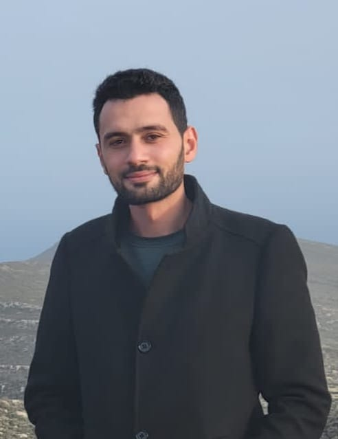

Contact
Email: m.dhia.b.h@gmail.com
Téléphone: +(216) 27 225 432
LinkedIn: linkedin.com/in/mohamed-dhia-ben-hmida-11b018135
Portfolio: mdbh.netlify.app
Adresse: Tunis, Tunisie

Email: m.dhia.b.h@gmail.com
Téléphone: +(216) 27 225 432
LinkedIn: linkedin.com/in/mohamed-dhia-ben-hmida-11b018135
Portfolio: mdbh.netlify.app
Adresse: Tunis, Tunisie
Consultant technique senior et tech lead avec 8 ans d'expérience dans la conception de systèmes critiques pour les banques. Tech lead chez ITSS Global depuis mars 2026 sur le reporting réglementaire, la GED, l'architecture lakehouse et le rapprochement Nostro. Stack : Java 21, Spring Boot, Oracle SQL / PL/SQL, PostgreSQL, Temenos T24 / Transact, React.
Arabe: Langue maternelle
Français: Courant
Anglais: Courant
École Nationale Supérieure d’Ingénieurs de Tunis (ENSIT)
Septembre 2015 – Juin 2018
Institut préparatoire aux études d'ingénieurs d'El Manar (IPEIEM), Tunis
2013 – 2015
2013
Consultant technique senior
ITSS Global
Mars 2026 – PrésentBFI Groupe
Juillet 2023 – Mars 2026SEGULA Technologies pour Groupe Stellantis
Octobre 2018 – Juin 2023Centre Technique, Carrières-sous-Poissy
Août 2019Framework Java MVC propriétaire
4 mois